Support
Two ways to track a condition
When you add a condition, TrackDX asks how it should be tracked. The choice changes what you log each day and what your Insights look like, so it's worth getting right — though you can change it later.
Episodes
Best for conditions that come and go in discrete attacks — migraine, IBS flares, asthma attacks, seizures, hypoglycemia. You log each episode: when it started, how long it lasted, how intense it was, what you took, and whether it helped. Days with nothing to report still count, because the quiet stretches are what make a trigger's hit-rate meaningful.
Daily severity
Best for conditions that are present most days and vary in degree — sciatica, fibromyalgia, eczema, TMJ. Instead of logging attacks, you rate severity once a day on a 0–10 scale, broken out by up to six body locations you choose. Insights then show your average, the change over recent weeks, your worst spot, and a per-location breakdown — so you can see what's responding and what isn't. If you've had a procedure like an injection or ablation, it's marked on the trend chart so you can see the before and after.
Not sure which to choose? TrackDX suggests a mode for each condition it recognises and explains the reasoning. It's a recommendation, never a restriction — if you know your condition behaves differently, pick the other one.
A blank day and a zero are not the same thing. Leave a day blank when you didn't record it; enter 0 when you did record it and there was nothing there. TrackDX treats them differently in every statistic.
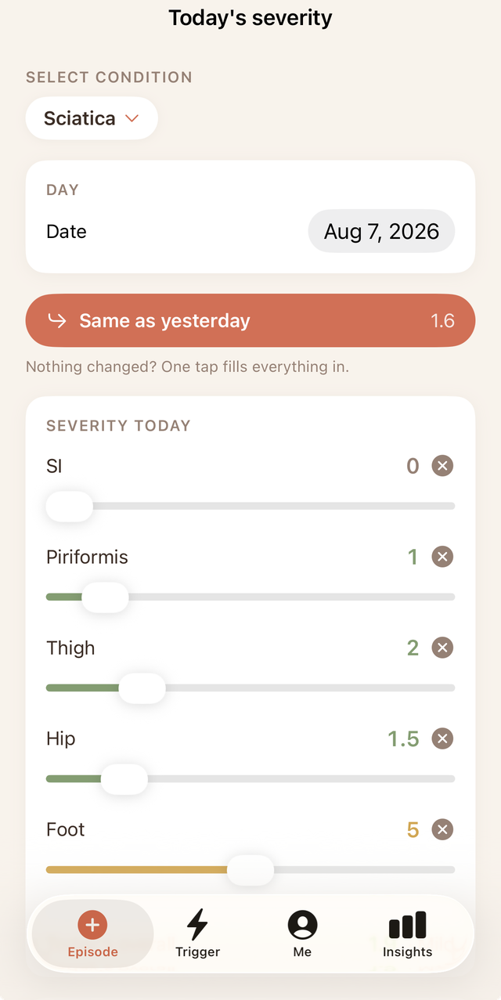
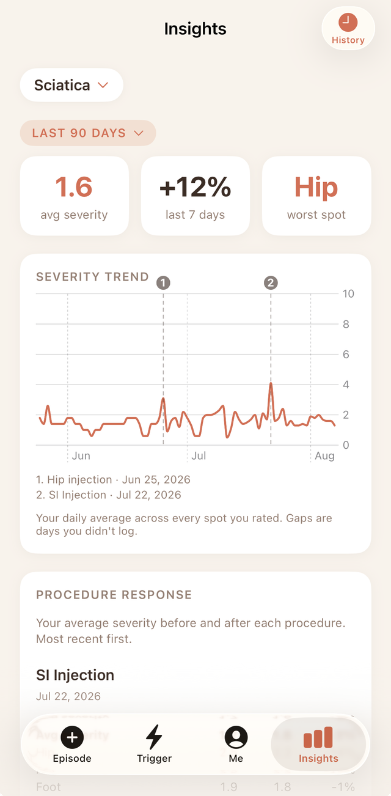
How to use TrackDX
A quick walkthrough of logging episodes and triggers, rating daily severity, managing your health, and reading your Insights.
Log an episode
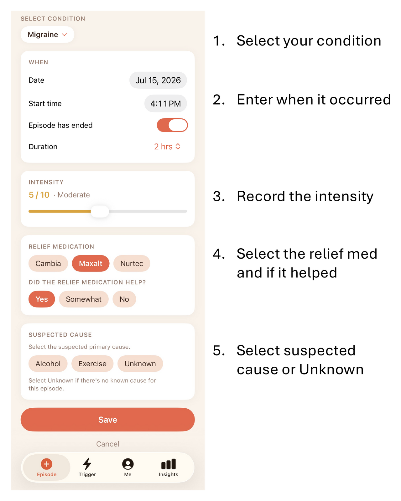
Log a trigger
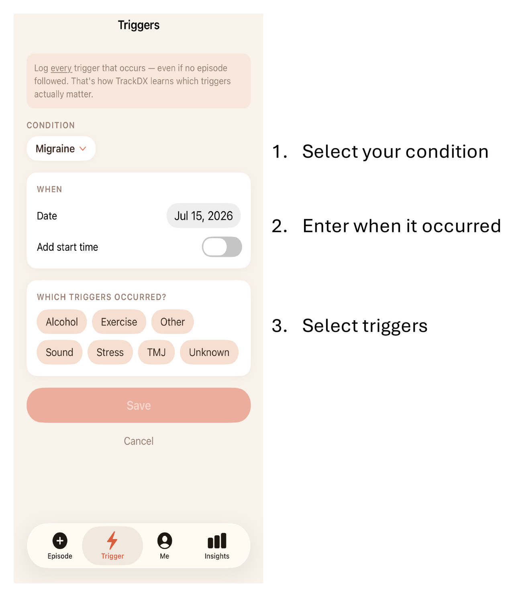
Manage your health
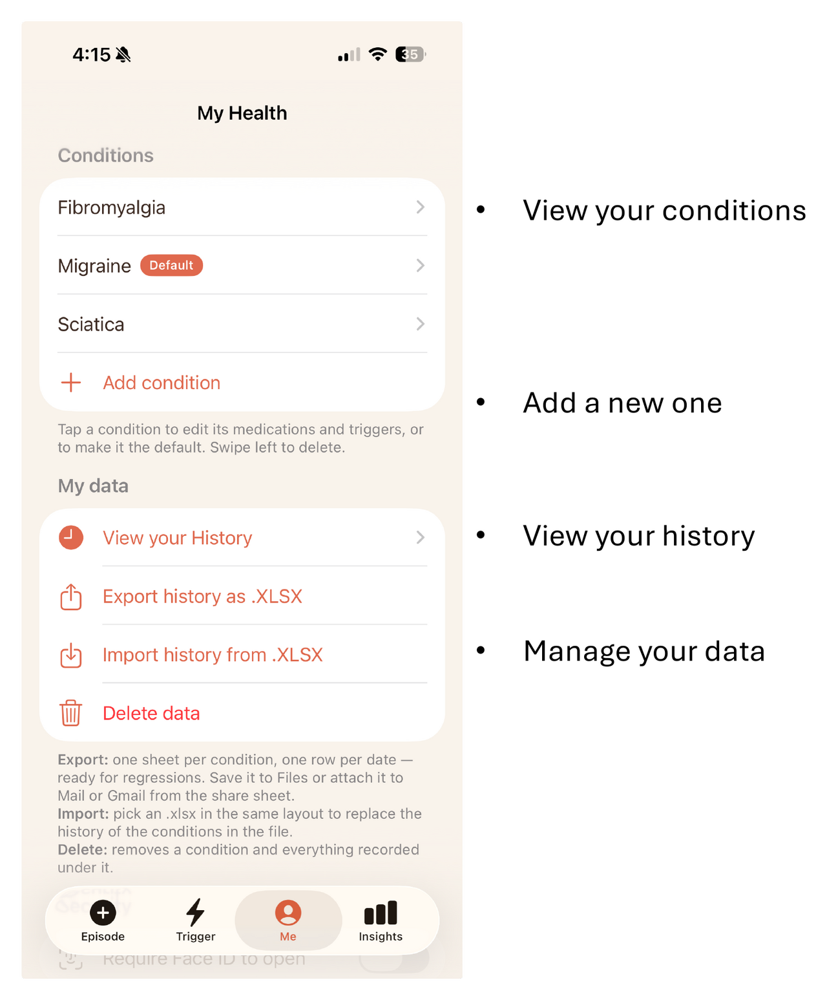
See your overall stats
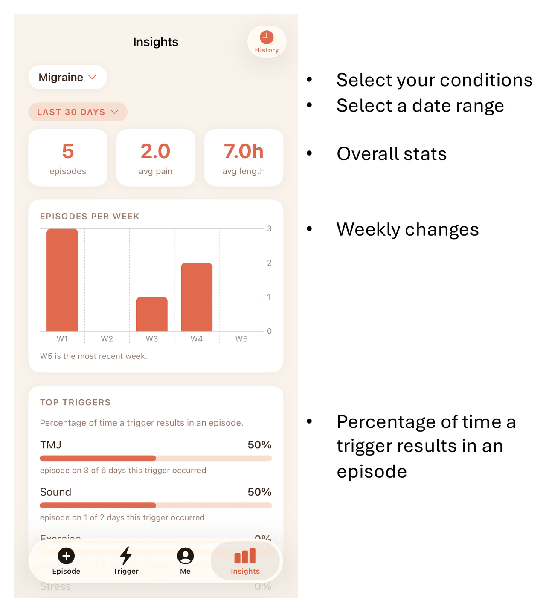
Causes, relief efficacy & trend
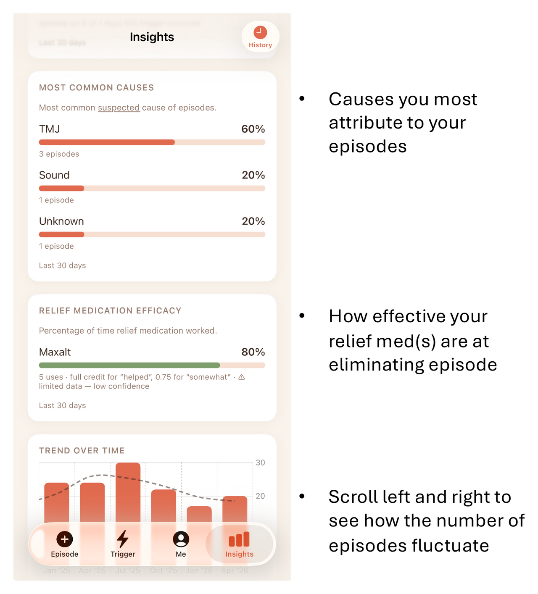
Which triggers & meds matter most
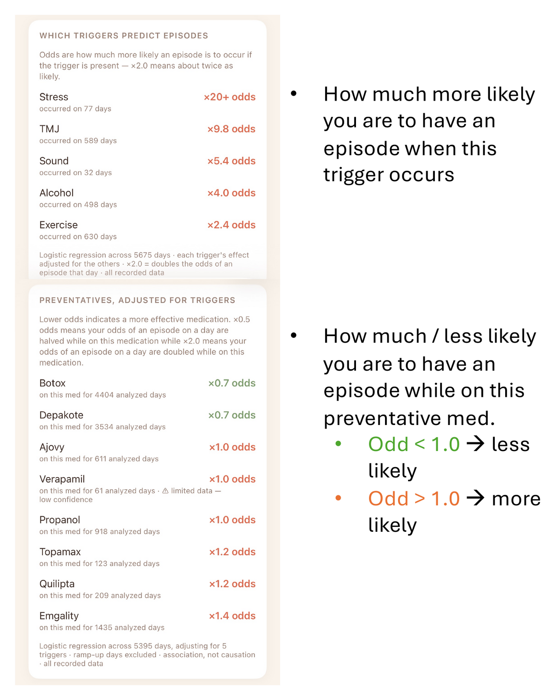
How meds affect severity
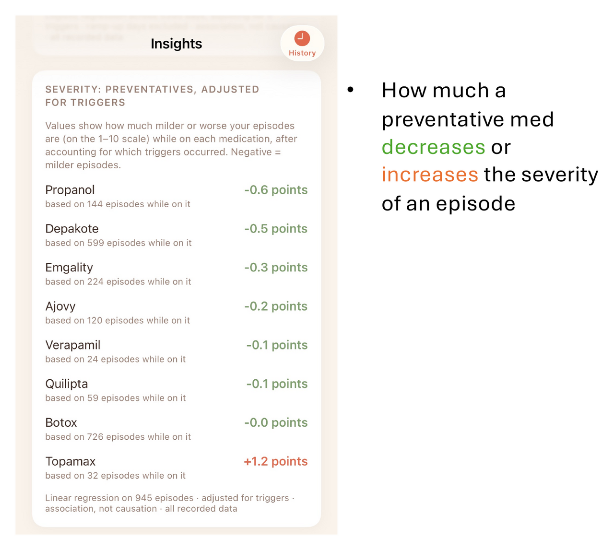
How triggers affect severity
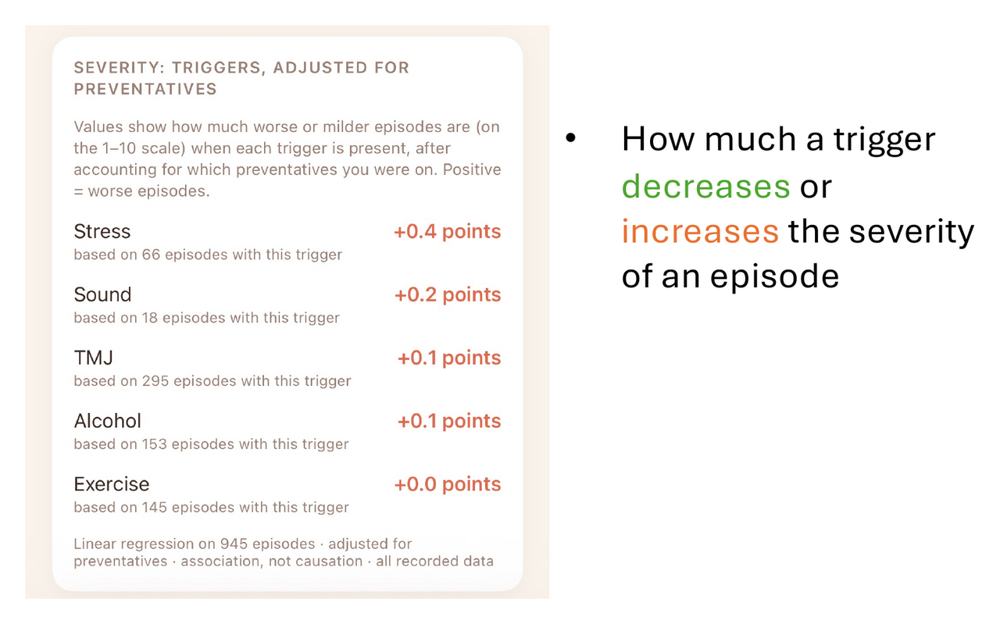
Track alcohol's impact
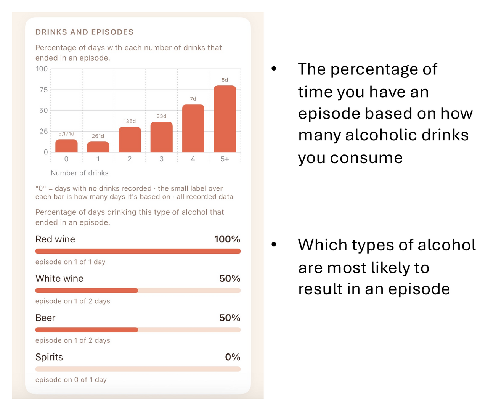
Questions, trouble, or suggestions?
Email our team and we'll do our best to help you out.
support@trackdx.net